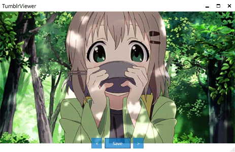
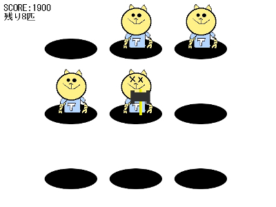

Welcome to yashihei.net
yashihei.netへようこそ！このサイトではやしへいが製作したゲームなどの公開をしてます。
作ったもの



TumblrViewer
C#WPF
プロコンでC#を多少触ったことがあったので、その経験を活かして製作しました。
TumblrAPIを叩いたり、モダンなUIな感じです。
コードビハインドを多用してるのでコードはあまり綺麗じゃないです…。


LIFEGAME
C++11DXライブラリ
C++でのゲーム製作に苦手意識を感じてたのですが、とりあえず小さなものを作っていこうという目標を立てては作った習作です。
見た目は普通のライフゲームですが、STLのコンテナを使ったり、クラスで管理したり、C++11の機能を使ったりと色々挑戦しました。
この頃に他にも幾つかのミニゲームを製作しました。



てくにゃん叩き
DXライブラリ
初めて完成させたゲームです。
元々弥生祭で弾幕STGを作って展示しようと思っていたのですが、時間も技術力も圧倒的に足りないことが分かり、急遽何でもいいからゲームを完成させることを目標に製作しました。